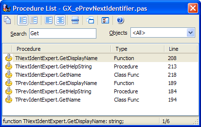

Procedure List |
  
|
Procedure List |
|
The procedure list enables you to view a list of Delphi or C++ procedures in the current unit and quickly jump to the implementation of a given procedure. The procedure list window is pictured below:

To search for a procedure, start typing in the Search edit box. As you type, the characters will appear at the top next to the word Search. To jump to a selected procedure, double click or highlight it and press enter.
Two search modes are provided. In the first search mode (match only from the start), searches are conducted only on the beginning of the procedure name (after an optional object reference). In the second search mode (match anywhere), the search string can match at any point in the procedure name. For example, if you had two functions, TMyObject.Assign and TMyObject.AssignWidget, searching for "assign" would return both methods in either mode, whereas searching for widget would return neither when searching from the start, while TMyObject.AssignWidget would appear if searching for a match at any point.
Using the Objects combobox on the right, you can filter the procedure list to display all procedures, only those without an associated object, or only those associated with a specific object. The Copy button will copy all of the visible procedure details to the clipboard.
Using the options button, you can configure several items:
•Optionally show the selected procedure's source code in a pane inside the procedure list
•Determine whether the search filter matches within class names as well as procedure names
•Configure the fonts used for display
•Select whether or not the class name of any methods are displayed